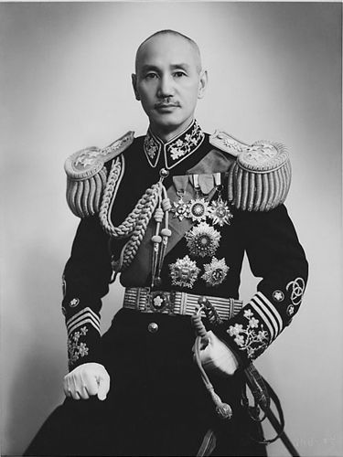

Sumber- Chiang Kai-shek (1887–1975) adalah seorang pemimpin militer dan politik Tiongkok yang terkenal pada abad ke-20. Berikut adalah beberapa informasi penting tentang kehidupannya:
Lahir pada 31 Oktober 1887, di sebuah desa di provinsi Zhejiang, Tiongkok. Chiang berasal dari keluarga dengan latar belakang sederhana dan mulai belajar di Akademi Militer di Jepang pada awal abad ke-20, di mana ia terinspirasi oleh ideologi militer dan nasionalisme.
Chiang bergabung dengan Partai Kuomintang (KMT) yang didirikan oleh Sun Yat-sen, pemimpin revolusi yang menggulingkan Dinasti Qing dan mendirikan Republik Tiongkok pada 1912. Chiang menjadi salah satu pemimpin militer utama dalam Perang Saudara Tiongkok antara KMT (dikenal juga sebagai pasukan Nasionalis) dan Partai Komunis Tiongkok (PKT).
Setelah kematian Sun Yat-sen pada 1925, Chiang Kai-shek menjadi pemimpin KMT dan mengambil alih kepemimpinan politik dan militer Republik Tiongkok. Pada 1928, Chiang berhasil mengonsolidasikan kekuasaan di seluruh Tiongkok melalui Perang Ekspedisi Utara, di mana dia berhasil mengalahkan pasukan warlord yang menguasai wilayah-wilayah Tiongkok. /p>
vPada 1937, Jepang menyerbu Tiongkok dan memulai Perang Cina-Jepang Kedua yang berlangsung hingga 1945. Chiang Kai-shek menjadi pemimpin Tiongkok yang berjuang melawan invasi Jepang. Meskipun pasukan Nasionalis Tiongkok sering terdesak oleh tentara Jepang yang lebih kuat, Chiang memperoleh dukungan internasional, terutama dari Amerika Serikat, yang mengirimkan bantuan militer dan ekonomi untuk membantu Tiongkok.
Setelah Perang Dunia II, perang saudara antara KMT dan PKT kembali berkobar. Mao Zedong dan Partai Komunis Tiongkok semakin kuat, sedangkan pasukan Chiang Kai-shek semakin melemah. Pada 1949, PKT berhasil mengalahkan KMT, dan Mao mendeklarasikan berdirinya Republik Rakyat Tiongkok di Beijing. Chiang dan pasukannya terpaksa mundur ke Taiwan, di mana ia mendirikan pemerintahan Republik Tiongkok yang baru.
Setelah mundur ke Taiwan, Chiang Kai-shek terus memimpin Republik Tiongkok di Taiwan, yang diakui oleh beberapa negara sebagai pemerintah sah Tiongkok, meskipun Tiongkok daratan sudah dipimpin oleh Mao Zedong dan komunis. Di Taiwan, Chiang dan partainya menjalankan pemerintahan otoriter, membatasi kebebasan politik, dan menekan lawan politik. Pada masa pemerintahannya, Taiwan mengalami percepatan industrialisasi dan penguatan militer. Namun, selama pemerintahannya di Taiwan, hubungan dengan Tiongkok daratan tetap tegang, dan Chiang selalu menegaskan bahwa dia berkomitmen untuk mengembalikan "Tiongkok yang bersatu" di bawah pemerintahan Nasionalis.
Chiang Kai-shek meninggal pada 5 April 1975 di Taipei, Taiwan. Setelah kematiannya, pemerintah Taiwan mulai melakukan reformasi politik dan perubahan demokratis, yang pada akhirnya mengarah pada transisi menuju pemerintahan demokratis yang lebih terbuka. Meskipun pemerintahannya di Taiwan sangat otoriter, warisannya di Taiwan sering dipandang sebagai simbol perlawanan terhadap komunisme dan penjajahan asing, serta sebagai sosok yang memperkuat Taiwan sebagai negara yang mandiri.
Di Tiongkok daratan, Chiang Kai-shek dianggap sebagai musuh besar oleh pemerintah komunis, yang menganggap dia sebagai simbol kapitalisme dan imperialisme. Namun, di Taiwan, Chiang masih dihormati oleh sebagian orang sebagai pemimpin yang memperjuangkan kemerdekaan Taiwan dan mempertahankan identitas nasional. Chiang Kai-shek adalah salah satu tokoh paling berpengaruh dalam sejarah modern Tiongkok, dengan peran yang sangat penting dalam perjuangan politik dan militer negara tersebut pada abad ke-20.